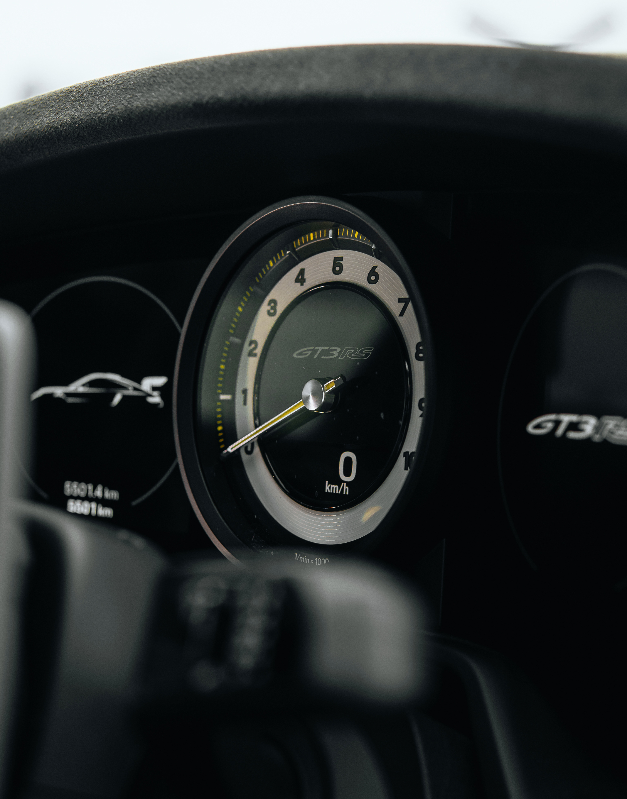

She has won countless championships.
Porsche has always taken racing seriously, and the 911 record reflects this fact. From victories at world-renowned events like the 24 Hours of Le Mans to competition at club level, the 911 excels on the track.

It has been around for decades.
When the first 911 rolled off the Porsche lines in 1963, no one could have predicted that it would continue to benefit from such a long production run. Although it has some competition with vehicles like the Corvette, the 911's long history is a lifelong source of appeal.